Explore
Approved application · approved logoEvery image below is an actual canonical PNG. Open an image for its full resolution. These are authored design scenes, not current-app browser captures.
Notes · next page
notes-page-loadingActions and implementation pointers
+ New page · Journal · Explore · All pages · ⌄ · Reflections · › · Reading · Ask Journl · Today’s Journal · Close · Instant · Thinking · ✓ Unlinked notes · All notes · ✓ Newest first · Oldest first
apps/web/src/app/(app)/explore/_components/explore-overview.tsxapps/web/src/app/(app)/explore/_components/cluster-items.tsxapps/web/src/app/(app)/explore/_components/source-contexts.tsx

SHA256 1c1b74af9a43697e7d73584c5b82451b1bbb9aead346edcb3d463ec0b2e3fcae

SHA256 9503d51fd25504962287102049bdb7254df866817f9839fea64bb03b6489b900

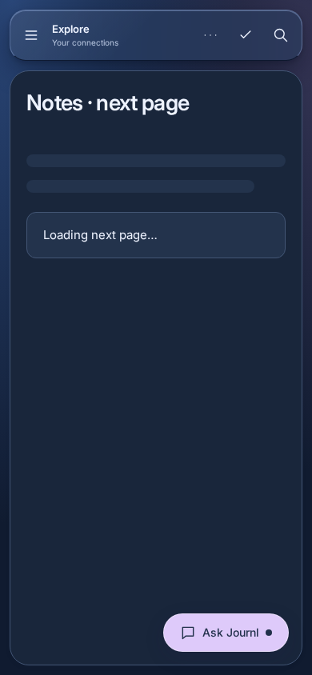
SHA256 a107cde352c16ba9db39eed0654f3e5621a8119e9bc52bfd7422f5ab02b538bb

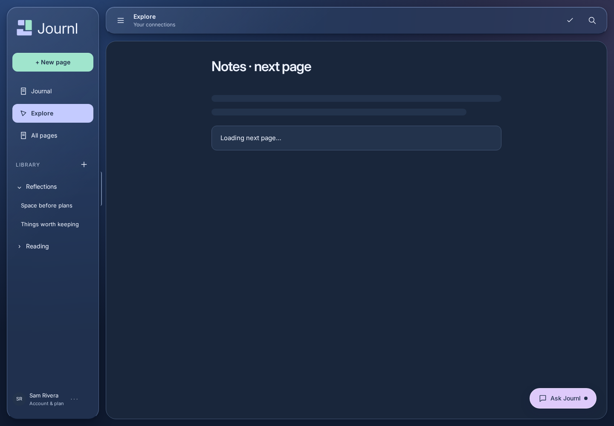
SHA256 0e912ddfc88f0dd1d595fe47441121a9c994ee9be574b80a6afaae8655b6b330
Notes · retry page
notes-page-errorActions and implementation pointers
+ New page · Journal · Explore · All pages · ⌄ · Reflections · › · Reading · Retry next page · Ask Journl · Today’s Journal · Close · Instant · Thinking · ✓ Unlinked notes · All notes · ✓ Newest first · Oldest first
apps/web/src/app/(app)/explore/_components/explore-overview.tsxapps/web/src/app/(app)/explore/_components/cluster-items.tsxapps/web/src/app/(app)/explore/_components/source-contexts.tsx

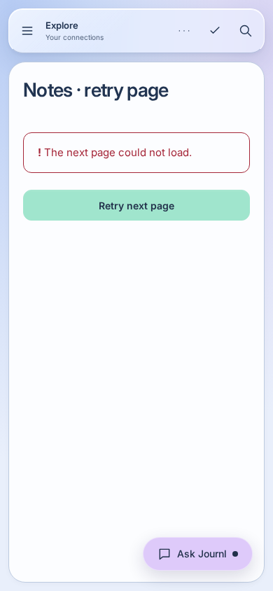
SHA256 306f48ab911f1ec130bb76bb34d6652b551dbcd118558b1d9eb6b580cbe74113

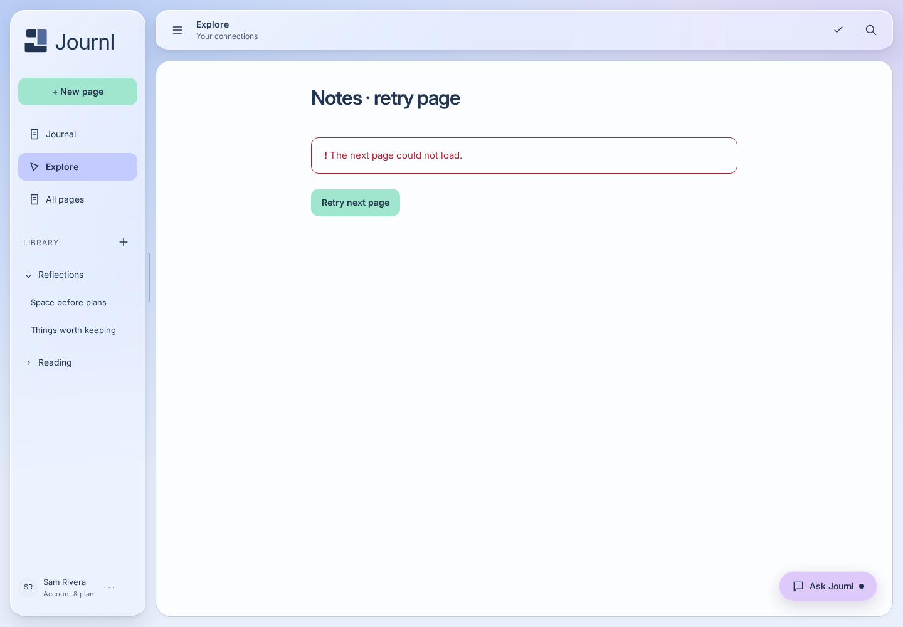
SHA256 3e60849a3671be600aae4ae62f0b5a57c39e0b882e1984ba033e7b35651fb850

SHA256 f99579842cd48008e3b2e40b66a00f8272bd0195dac0575c38868430f53a34d9

SHA256 f82401345956f9f9d3991c461b784b12b4a39dd2e0a04ce8626cc8ce63ff7c24
Sources · independent pages
sources-paginationActions and implementation pointers
+ New page · Journal · Explore · All pages · ⌄ · Reflections · › · Reading · Previous · Next · Ask Journl · Today’s Journal · Close · Instant · Thinking · ✓ Unlinked notes · All notes · ✓ Newest first · Oldest first
apps/web/src/app/(app)/explore/_components/explore-overview.tsxapps/web/src/app/(app)/explore/_components/cluster-items.tsxapps/web/src/app/(app)/explore/_components/source-contexts.tsx

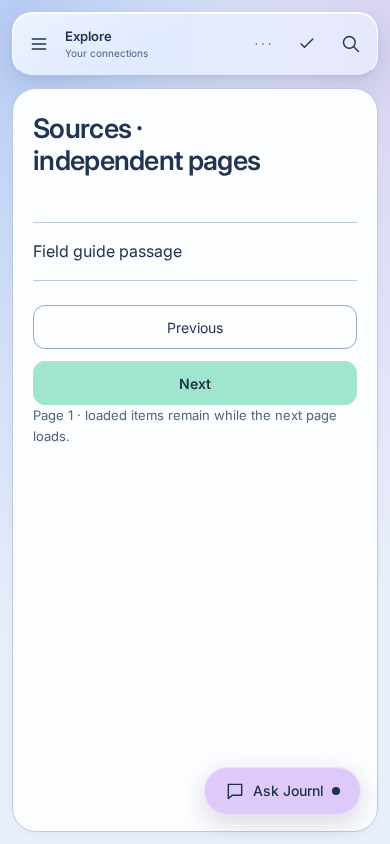
SHA256 2982850b5fd84eb753a30a02a97fceaa87fc1a90ce9d2cfda1bdc11d0b020291

SHA256 e6ad2b4231e8fa2180103adcbc41e5c29ca2f85416ed251c19950f1c12e17f94

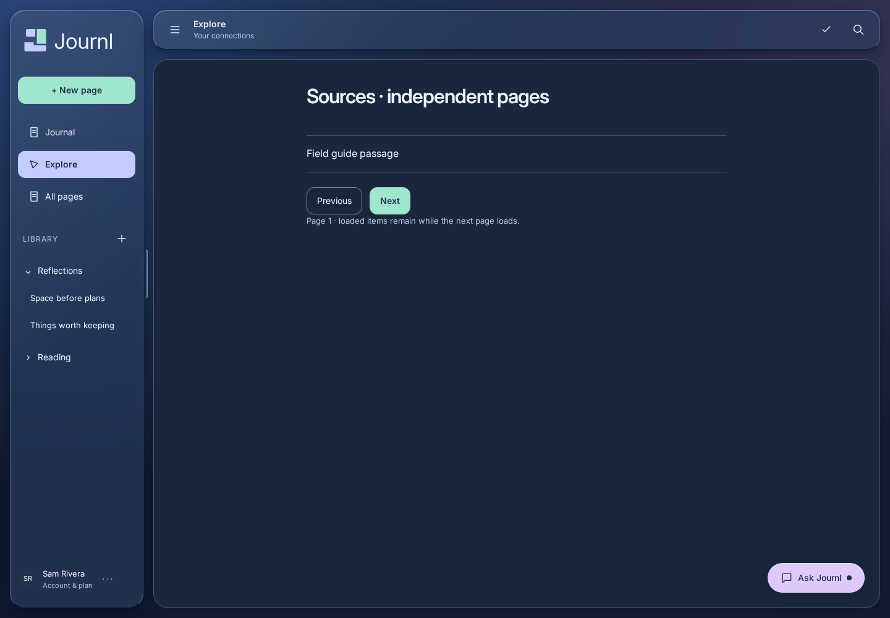
SHA256 22befe485c3bbcc83e5e6641f6a4143cae2ef255c00967bd84eeb77afabbb099

SHA256 7ac29a6e02e9eba1ac613342ba08541c38dc220aa599ead765cf284ff3708e77
Sources · next page
sources-page-loadingActions and implementation pointers
+ New page · Journal · Explore · All pages · ⌄ · Reflections · › · Reading · Ask Journl · Today’s Journal · Close · Instant · Thinking · ✓ Unlinked notes · All notes · ✓ Newest first · Oldest first
apps/web/src/app/(app)/explore/_components/explore-overview.tsxapps/web/src/app/(app)/explore/_components/cluster-items.tsxapps/web/src/app/(app)/explore/_components/source-contexts.tsx

SHA256 ffb58f58616e670385b437ab718a860ee0cbc5b08fea82bd80b4bb7d1dcdc2a4

SHA256 e1a4be2a646db44b49244e8d82799cd0d8ccd630e3d93f7bfc61ce52b9b4958f

SHA256 8cda382e8491cce44bc40c28ee3fec1bdd98100df943721256692829e8c73406

SHA256 43ba5d67cb9aed4efc0051913d430d20d588f6cd2d72ab3a599bd069fa5908f2
Sources · retry page
sources-page-errorActions and implementation pointers
+ New page · Journal · Explore · All pages · ⌄ · Reflections · › · Reading · Retry next page · Ask Journl · Today’s Journal · Close · Instant · Thinking · ✓ Unlinked notes · All notes · ✓ Newest first · Oldest first
apps/web/src/app/(app)/explore/_components/explore-overview.tsxapps/web/src/app/(app)/explore/_components/cluster-items.tsxapps/web/src/app/(app)/explore/_components/source-contexts.tsx

SHA256 72c34c176b297d06ae27144920166c33568884a3535b71be8ceafbc227c617d4

SHA256 e2b92efebe60129705762492e6e99352e811b54cdd8fd9e8842aadd6c25a6b94

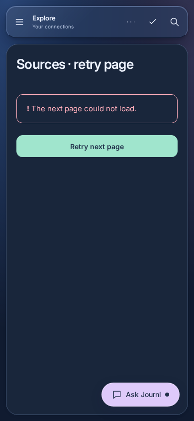
SHA256 57a61b52faead63c96b61ff5f21aeee26d7d06f003ee62c4725d5ce1fb532b06

SHA256 4378841ad78ef5afe1da781d0f358bb796f01d0f1cd758b0498ae20cae01a5b6
Connections · independent pages
connections-paginationActions and implementation pointers
+ New page · Journal · Explore · All pages · ⌄ · Reflections · › · Reading · Previous · Next · Ask Journl · Today’s Journal · Close · Instant · Thinking · ✓ Unlinked notes · All notes · ✓ Newest first · Oldest first
apps/web/src/app/(app)/explore/_components/explore-overview.tsxapps/web/src/app/(app)/explore/_components/cluster-items.tsxapps/web/src/app/(app)/explore/_components/source-contexts.tsx

SHA256 501d0e538d47a82e5664e2c59e975fdcd846e1a47bf52d7dbe0b7c6e430b62e8

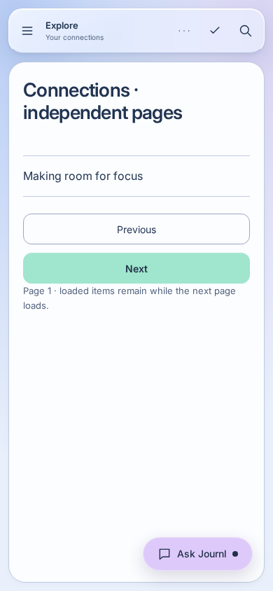
SHA256 f2c46b91a8bf6594a66f1e2aae1dc6fe1f653b88622c004f82ed2a2f9b0553a1

SHA256 408ff568f67f1d7d0f5a4ba479c27d9d6ffeadbed803deca926cf625d6a3759b

SHA256 ff850dff0ad0039b1c7e09dff8484f05d190b74bee715840c1b13e3c078d73f3
Connections · next page
connections-page-loadingActions and implementation pointers
+ New page · Journal · Explore · All pages · ⌄ · Reflections · › · Reading · Ask Journl · Today’s Journal · Close · Instant · Thinking · ✓ Unlinked notes · All notes · ✓ Newest first · Oldest first
apps/web/src/app/(app)/explore/_components/explore-overview.tsxapps/web/src/app/(app)/explore/_components/cluster-items.tsxapps/web/src/app/(app)/explore/_components/source-contexts.tsx

SHA256 26c40619e24d76dbee462bc8fb5694dd3ba1add86634e79608e7eee5e21e45f3

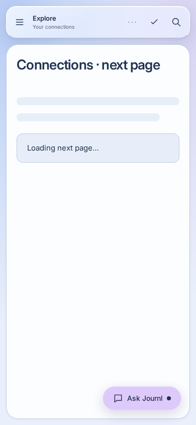
SHA256 99cbe2d645073fb32b116af143d006bf90d0799574df713d7f88662b525f7163

SHA256 f78b495d2d98331e26e5cf41b4a0d74d841eea05e2f5a2d801cfcb87a1be8837

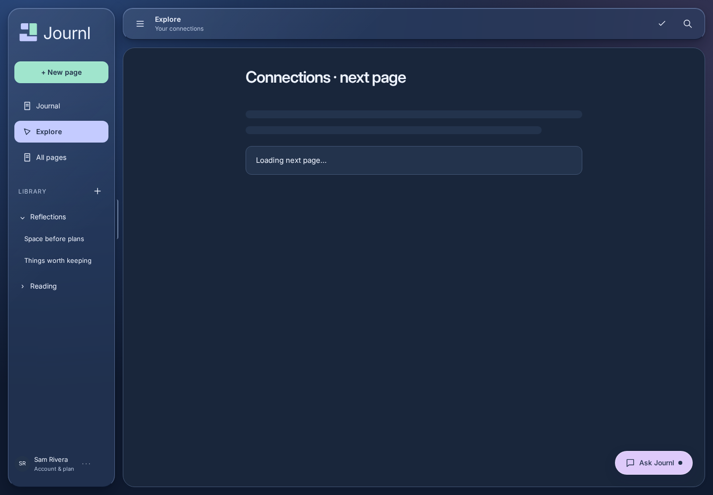
SHA256 9e71977e54a9ab6b711138c9c02d3412457fcd97c684685ed7714cff1705249f
Connections · retry page
connections-page-errorActions and implementation pointers
+ New page · Journal · Explore · All pages · ⌄ · Reflections · › · Reading · Retry next page · Ask Journl · Today’s Journal · Close · Instant · Thinking · ✓ Unlinked notes · All notes · ✓ Newest first · Oldest first
apps/web/src/app/(app)/explore/_components/explore-overview.tsxapps/web/src/app/(app)/explore/_components/cluster-items.tsxapps/web/src/app/(app)/explore/_components/source-contexts.tsx

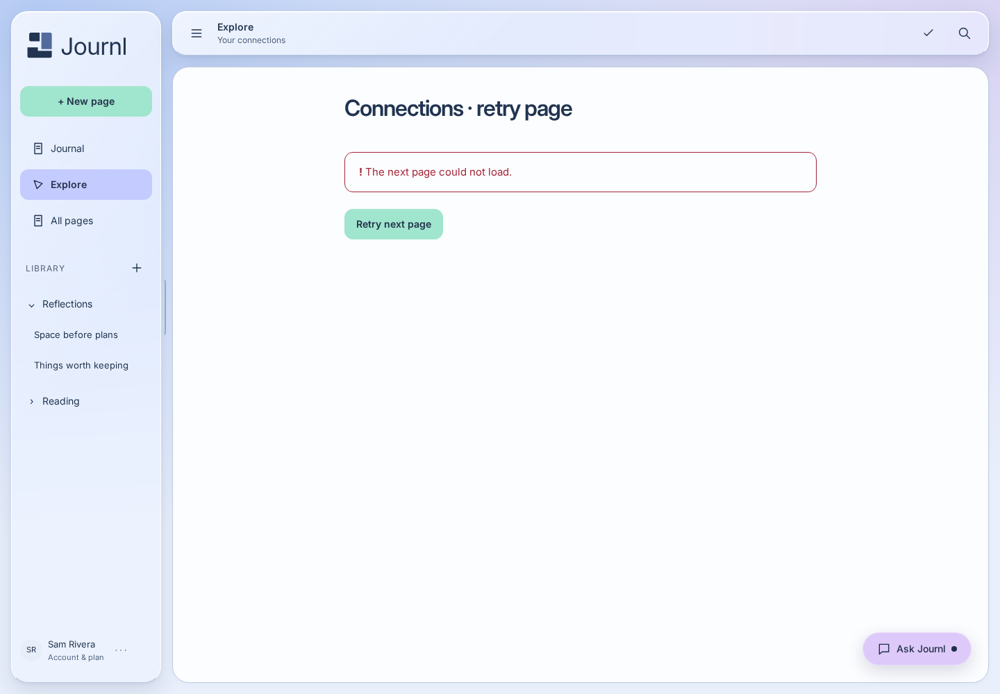
SHA256 923000e1778a10ee5afe3420bf6ac3ab294fbb04493221c312b9a90fdfc46d7f

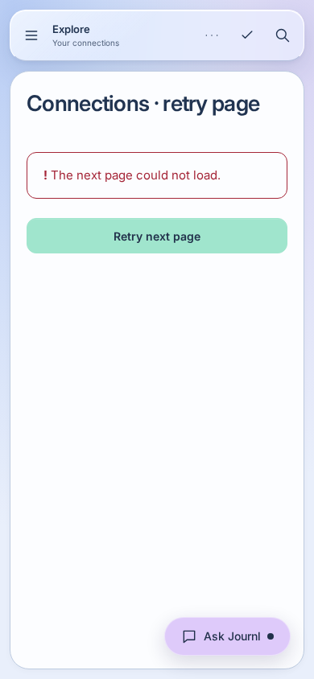
SHA256 356314b2992a0d2132de887619c0a583178c18b79f810c5917e790cc8aea5eea

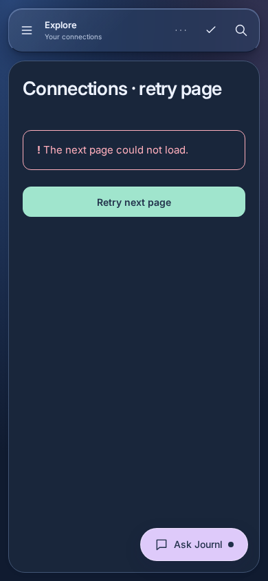
SHA256 eaa1b2dd38928c4d2ebd1e2d7956296abe3595cbdb9c09014bd17f84004e1b62

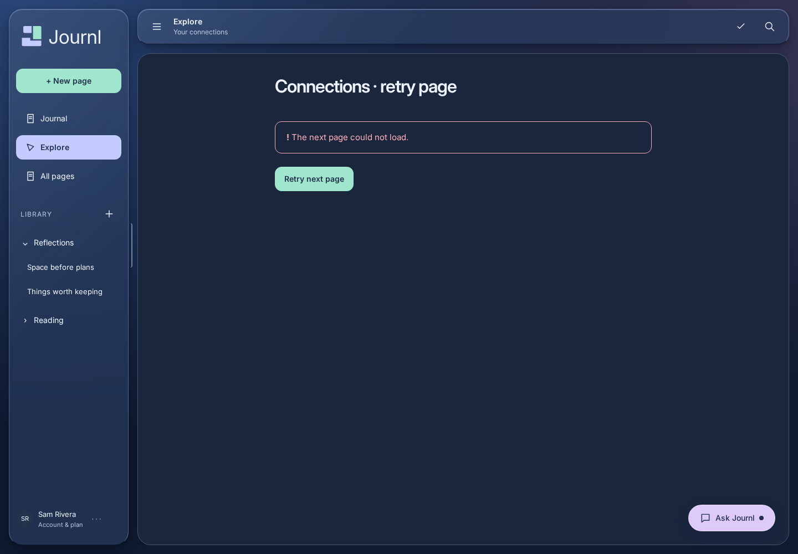
SHA256 97c5b84051fe1225bbf0a3344c62935310a3cf091306b5b06bbc4a6d86525580
Rename thread · ready
thread-rename-readyActions and implementation pointers
+ New page · Journal · Explore · All pages · ⌄ · Reflections · › · Reading · Cancel · Save name · Ask Journl · Today’s Journal · Close · Instant · Thinking · ✓ Unlinked notes · All notes · ✓ Newest first · Oldest first
apps/web/src/app/(app)/explore/_components/explore-overview.tsxapps/web/src/app/(app)/explore/_components/cluster-items.tsxapps/web/src/app/(app)/explore/_components/source-contexts.tsx

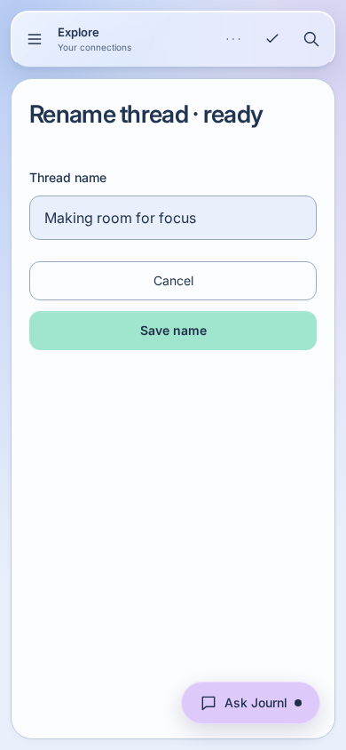
SHA256 b200e8227c833b52ed01e0d63930f9894a5ee402c37eeaa58e4ed9edc720be03

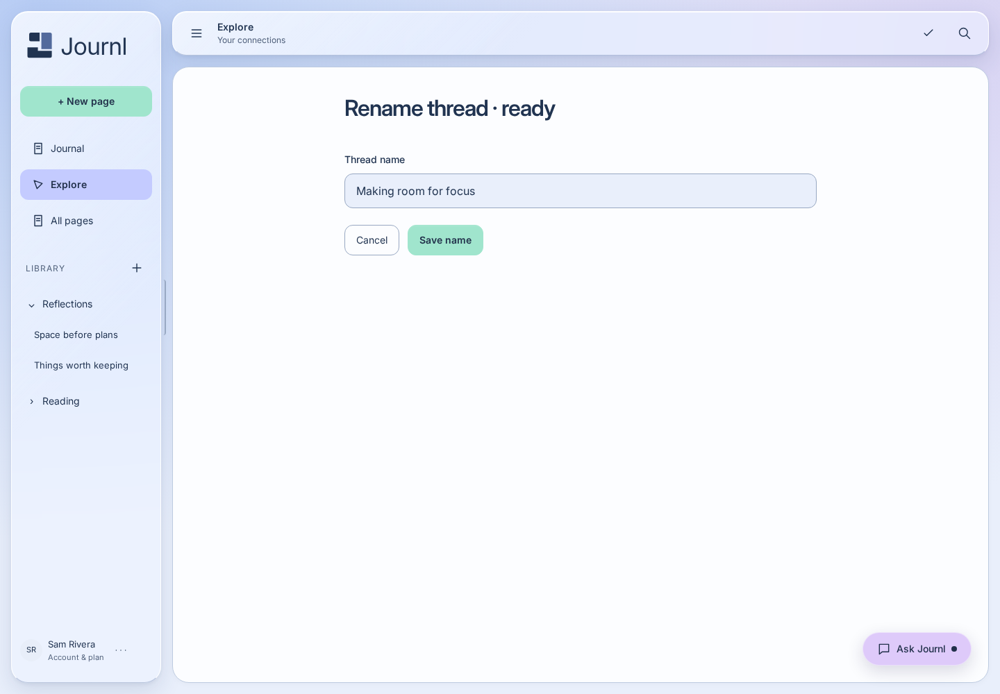
SHA256 a3db1b3482870abb732cb5422c4341c81bddb7e67200ccf99cd29968751d8b9e

SHA256 458442383c216f2f12d098ffb4541556665ebab4f31017cd187a812448403688

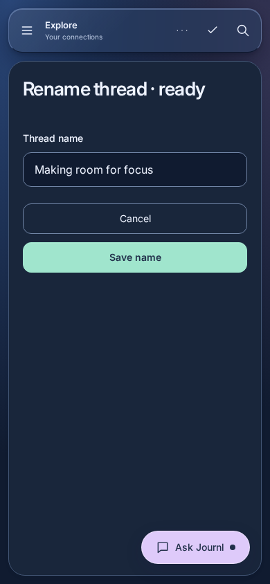
SHA256 8c4ff0b15e2baeeb6210a7bd131d9fde71987217b8884d84723fe5e1a2809cf7
Rename thread · pending
thread-rename-pendingActions and implementation pointers
+ New page · Journal · Explore · All pages · ⌄ · Reflections · › · Reading · Save name… · Cancel · Ask Journl · Today’s Journal · Close · Instant · Thinking · ✓ Unlinked notes · All notes · ✓ Newest first · Oldest first
apps/web/src/app/(app)/explore/_components/explore-overview.tsxapps/web/src/app/(app)/explore/_components/cluster-items.tsxapps/web/src/app/(app)/explore/_components/source-contexts.tsx

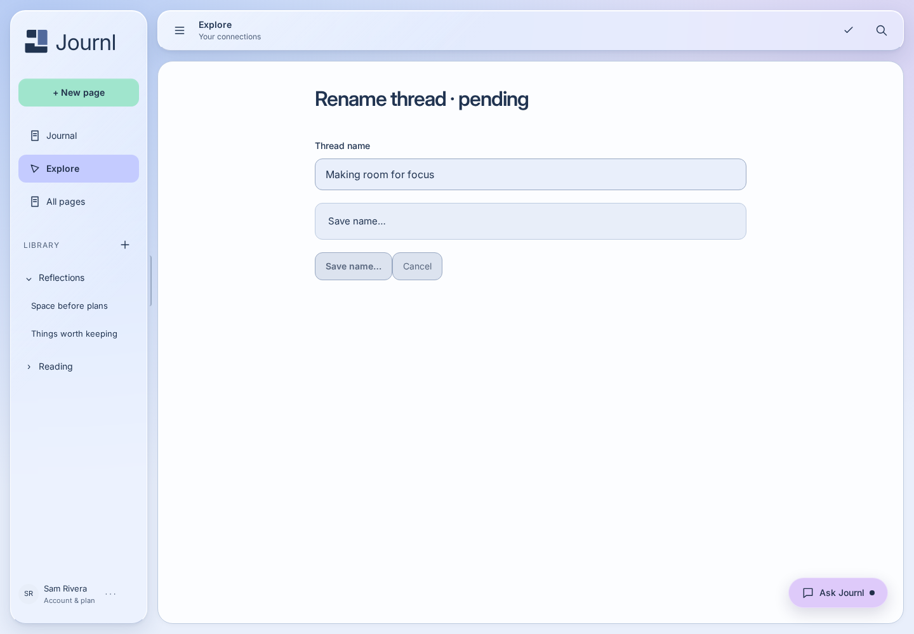
SHA256 09a8a71d61fee0b5d868d23bb4fb0b2fb14b3ea7faa63ef1b65d97cebfb9e161

SHA256 a55dd310e669a9971789a5f3ede0c3ec200a44a88ff7dd9c24c1af002ff04015

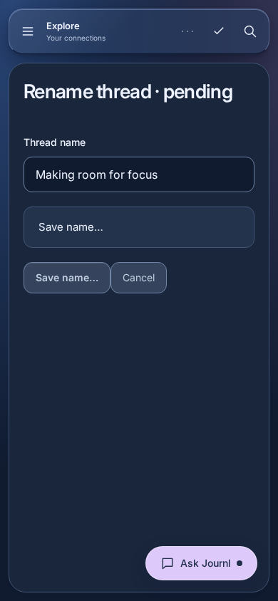
SHA256 ae55bd1ecb9d3c05efccc7d0ea872a25be09b6e0b17e6bca1cc720ece4a60fe4

SHA256 82e5d3198b8f4bea49f1ba4a7488949691ad2cb768d3cc09a4c7fb61d58a8a98